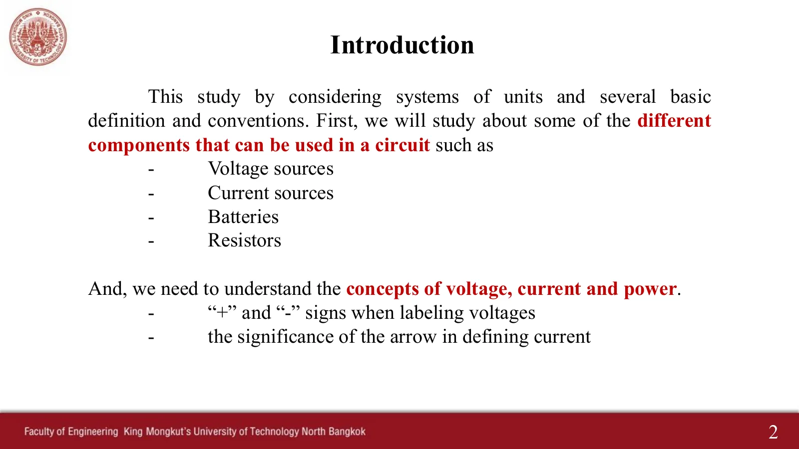
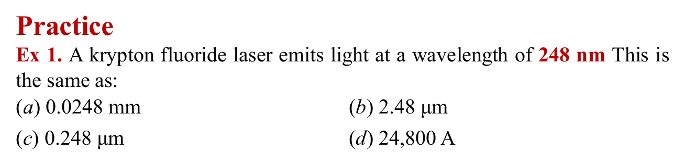
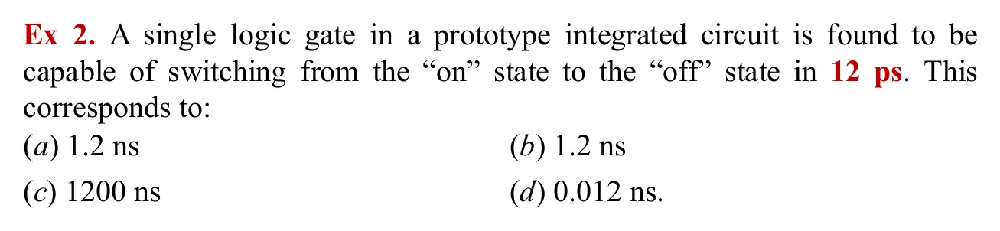
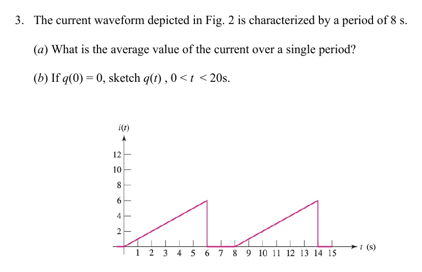
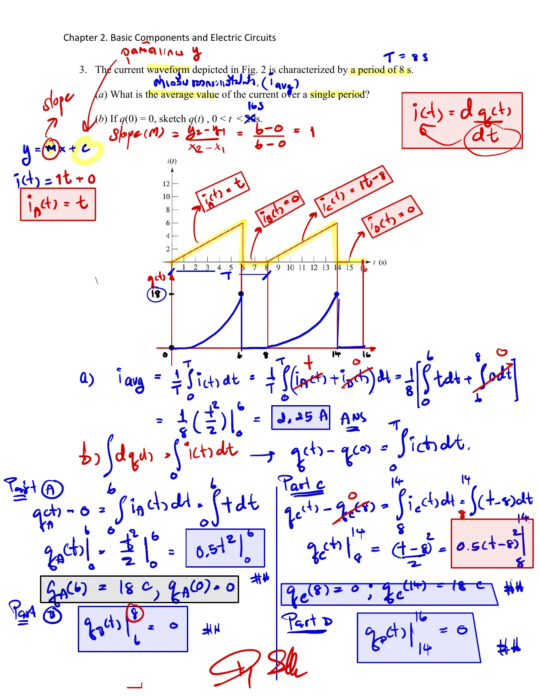

บทที่ 2 เริ่มจาก ระบบหน่วย แล้วจึงนิยามปริมาณพื้นฐานของวงจร: ประจุ กระแส แรงดัน และกำลัง หน้านี้ครอบคลุมหน่วยกับคำนำหน้า (สไลด์หน้า 3–5) และประจุกับกระแส (สไลด์หน้า 6–8, 17–18) มี เครื่องมือ 2 ชิ้น (A, B) และ 4 โจทย์ เรียงทีละข้อ แต่ละข้อมีภาพสไลด์ ภาพจำลองของตัวเอง และเฉลยที่เปิดทีละขั้น
Chapter 2 starts from systems of units, then defines the basic circuit quantities: charge, current, voltage and power. This page covers units and prefixes (slides pp. 3–5) and charge and current (slides pp. 6–8, 17–18). It has 2 tools (A, B) and 4 problems, one after another, each with its slide picture, its own simulation and a solution opened step by step.


แผ่นสีชมพูคือ หน้าตัดที่เราเลือก จุดวิ่งเร็ว = กระแสมาก กราฟล่างแสดงว่าประจุที่ผ่านไปแล้ว \(q(t)\) คือ พื้นที่ใต้กราฟ \(i(t)\) กด "แสดงอิเล็กตรอน": ในลวดโลหะสิ่งที่วิ่งจริงคืออิเล็กตรอน (สวนทาง) แต่เราตกลงกันใช้ทิศของประจุบวก
The pink disc is the cross-section we chose; fast dots = large current. The lower graph shows the charge that has crossed, \(q(t)\), is the area under \(i(t)\). Press "Show electrons": in a metal wire the electrons are what really move (the other way), but by agreement we use the direction of positive charge.

